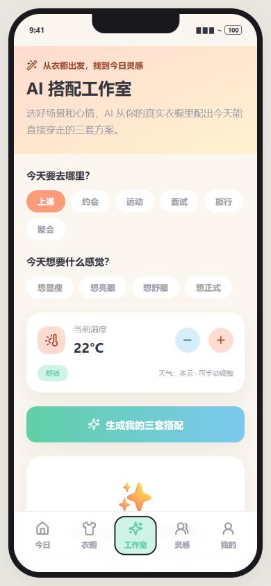
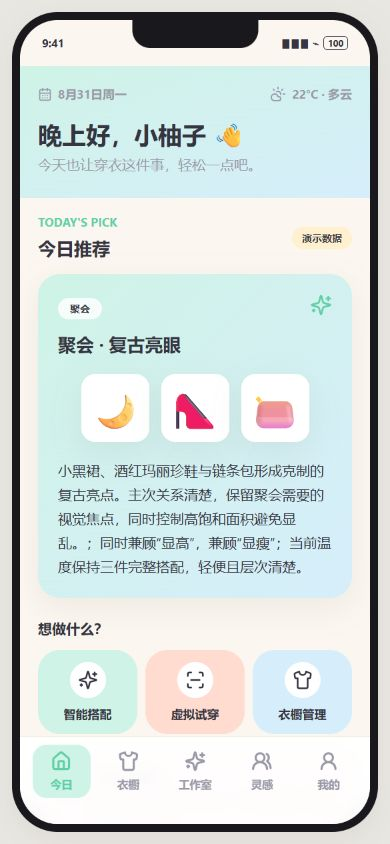
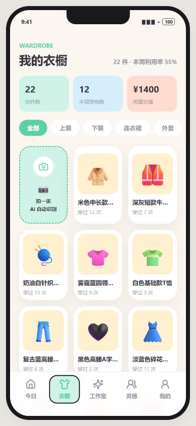
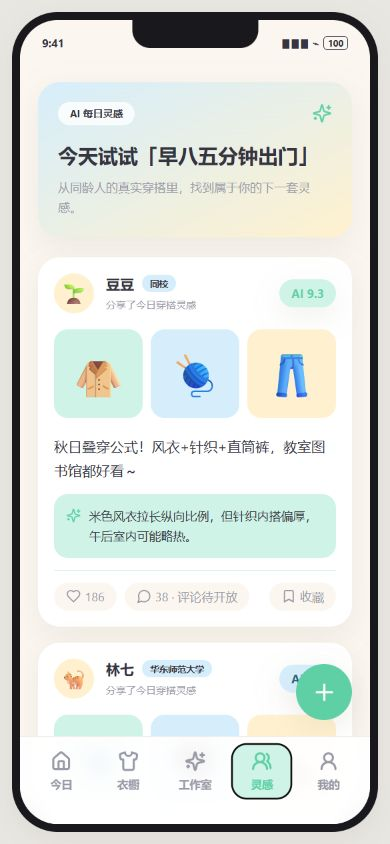
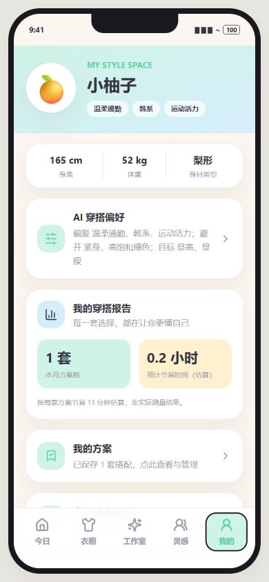

一个完整体验闭环
首页 → 衣橱 → 搭配工作室 → 灵感社区 → 我的方案。
面向校园多场景的穿搭助手。把衣橱、场景、温度与个人偏好连接起来，完成从单品录入到搭配保存的决策闭环。
公开体验为 Mock 演示，不调用真实模型、不消耗额度。图片和操作仅保存在当前浏览器；识别标签可手动修正。

首页 → 衣橱 → 搭配工作室 → 灵感社区 → 我的方案。
上课、约会、运动、面试、旅行、聚会，结合温度与心情演示。
预置演示单品，无需注册或录入整套衣橱即可开始体验。
模型识别有不确定性，保留人工修正名称、品类、颜色与季节的步骤。
缺鞋、缺下装、温度外套约束可程序校验；审美与身材适配仍需真人评测。
校验失败重试一次，再失败明确降级；区分实际来源与配置的服务名称。
以下为 2026-08-31 的本机定向联调。三条成功样例不能代表总体准确率。
| 能力 | 当前结果 | 证据边界 |
|---|---|---|
| 衣物识别 | 单张公开样本通过 | 白色 V 领短袖，2046ms；非多样本准确率。 |
| 穿搭点评 | 两个定向用例通过 | 完整组合 5822ms；缺鞋组合 9820ms，含重试。 |
| 三套搭配生成 | 尚未通过 | 面试 22°C 在 15 秒时限内超时；其他温度仍待测。 |
| 真实用户价值 | 尚未验证 | 访谈、任务计时与满意度待补齐。 |
390×844 浏览器视口截图 · Seed / Mock 数据 · 非手机硬件验收



